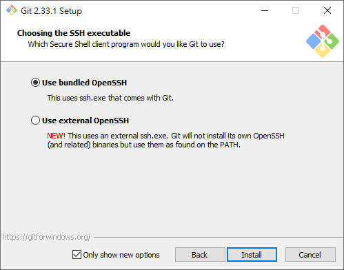

在 Windows 10 安裝 Git
開啟網頁 https://git-scm.com/download/win：
點擊 Click here to download manually 下載安裝檔，下載完成後打開安裝檔：

點擊 Next：
點擊 Next：

點擊 Install：

每個人的電腦情況不同，你可能不會看到上面這個畫面，如果你看見了，點擊 確定 就好：

已完成 Git 的安裝，點擊 Finish 結束安裝。
確認是否安裝完成
開啟 Visual Studio Code，如果原本就是開啟的狀態，請先關閉後再開啟。

按下 Ctrl + J，開啟終端機：

輸入 git --version 查看安裝好的 git 版本：

結果應為 git version... 如上圖所示。